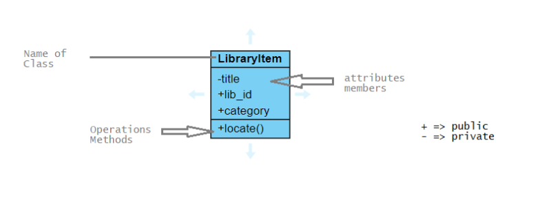
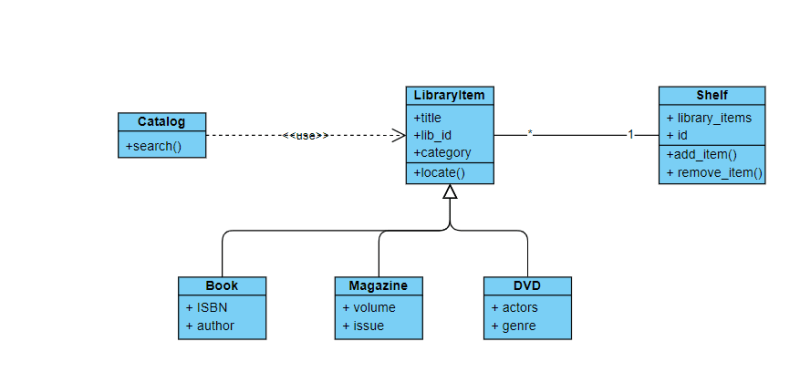
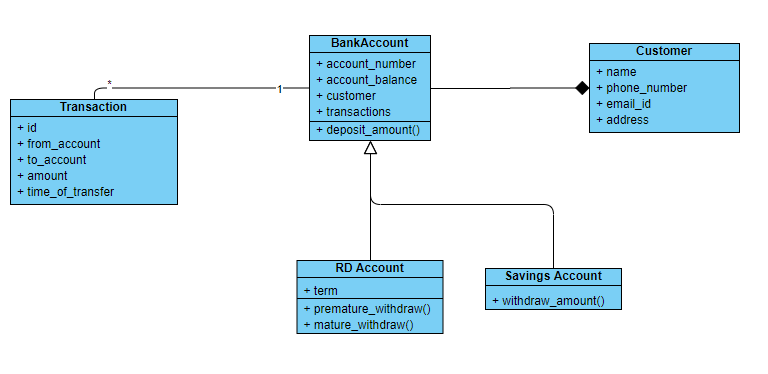
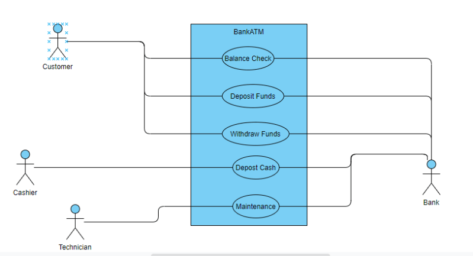

18 Unified Modelling Language
Unified Modeling Language
- In UML we have two basic kinds of Modeling
- Structural Modeling
- Behavioral Modeling
- Structural Modeling: It represents the framework for the system & it captures static features of design. The following are popular diagrams:
- Class diagrams
- Object diagrams
- Deployment diagrams
- Package Diagrams
- Component diagrams
- Behavioral Modeling: It captures interactions in the system. The following diagrams are part of behavioral modeling
- Activity diagram
- Interaction diagram
- Use case diagram
Class Diagram
- Class Notation

- Class Diagram for library

Exercise:
- Create a diagram as shown above for the following problem statement.
- A Bank has savings account, fixed deposit account, recurring deposit account and loan accounts.
- Bank Manager/Accountant would like to search with account number using AccountConsole.
- Customers should be able to see account balance, last transactions.
- Also represent Transactions in the diagram.
- Lets try to come up with class diagram.

UseCase Diagram
- This is used to capture the dynamic aspects of system.
- Use cases have
- Actors
- Usecases represent high level activities
- Lets draw a use case diagram for Bank Atm, we have 3 types of users
- Customer: Uses atm for
- Checking balances
- Deposit funds
- Withdraws funds
- Cashier
- Deposit amount into ATM
- Admin/Technician:
- Maintenance
- Repair
- Customer: Uses atm for
